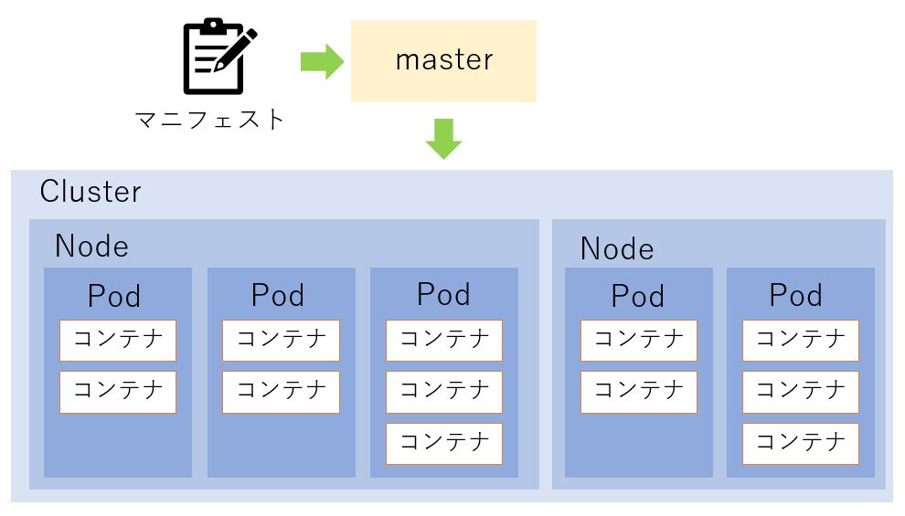

Docker Compose
Docker Composeは，複数のコンテナを1つのYAML形式のファイルで定義して管理するツールである．一般的に，1つのコンテナにつき，1つのプロセスが内包されることが推奨されているが，扱うコンテナが増えるほど，それらを管理・運用する負担も増加していく．このようなケースにおいて，Docker Composeを用いることで，このような煩わしさを解消できる．また，Docker composeで使用するコマンドは，Dockerのコマンドと似ているため，簡単に覚えられることも特徴の1つである．
Docker Composeを利用しない場合は，各コンテナ一つ一つを，それぞれ細かく設定しなければならないが，Docker Composeを利用すれば，docker-compose.ymlを定義し，$ docker-compose up1つで複数コンテナを起動できる．例えば，Webアプリケーションを立ち上げる場合，フロント・バックエンド，Webサーバ，DBなどの定義を，1つのdocker-compose.ymlファイルに記述することで，必要なコンテナ群をまとめて起動・設定でき，1つのサービスとして管理可能となる．
手順は以下の通りである．
- Dockerfileの作成 あるいは Docker Hubからイメージをダウンロード
- docker-compose.ymlを定義
- ymlファイルがあるディレクトリで，
$ docker-compose upを実行する
docker-compose.ymlの記述例
以下のdocker-compose.ymlでは，wordpressコンテナとmongodbを使用するmysqlコンテナを作成している．
version: '1'
services:
wordpress:
image: wordpress
ports:
- 8080:80
environment:
WORDPRESS_DB_PASSWORD: xxxxx
mysql:
image: mongodb
environment:
MYSQL_ROOT_PASSWORD: yyyyy
Docker Composeのコマンド例
$ docker-compose up -d：コンテナ生成・起動$ docker-compose ps：コンテナの一覧$ docker-compose logs：コンテナログ$ docker-compose stop：コンテナの停止$ docker-compose rm：コンテナの削除$ docker-compose down：コンテナの停止・削除
Kubernetes
Kubernetes(k8s・kubeと略される)とは，Googleが公開したオープンソースのコンテナオーケストレーションシステムである．噛み砕いて言うと，「多くのコンテナを置いて連携させるようなアプリケーションを，デプロイ・スケーリング・管理するためのソフトウェアである．
Kubernetesの全体構造図
Kubernetesは，上記のような構成になっている．Kubernetesが管理する基本単位は”Pod”と呼ばれるコンテナの集まりである．また，複数のPodがまとめたものを”Node”と呼び，さらにNodeをまとめたものを”Cluster”と呼ぶ．Pod，Node，Clusterを管理するものを”Master”，Masterへの指示や設定を”Manifest”と呼ぶ．
Kubernetesを用いることで，複数のコンテナを自動的に管理できる．例えば，Kubernetesでは，コンテナを起動する際に，イメージと台数を指定するだけで良く，どのサーバにどのようにコンテナを配置するのか，といった作業は，Kubernetesが自動で行ってくれる．また，コンテナに必要な計算機リソースが不足した場合は，既存のサービスに影響を与えることなく，自動で拡張を行う．
Kubernetesの機能説明の例として，まずは，Docker Composeのみでシステムを構築した場合の図を示す．
しかし，この場合，以下のような問題が発生してしまう．
- コンテナを更新する際，コンテナ間の依存関係やデプロイ順序を考慮しなければならない...
- どのコンテナがどのサーバにあるのか管理しなければならない...
- ロードバランサーの設定も手動でしなければならない...
- アクセス状況に応じたスケーリングも手動でやらなければならない...
- コンテナが死んだ場合，どのように気付くのか？その回復方法は？
- どのコンテナがどのサーバにあるのか管理しなければならない...
- logファイルはどのように管理するのか？
- etc...
これらの問題を解決してくれるシステムがKubernetesであり，下図がKubernetesの機能を表したイメージ図である．
Kubernetesは様々な機能を提供する．以下に代表的な機能を幾つか列挙する．
- サービスディスカバリー，負荷分散：
DNS名や独自のIPアドレスを使ってコンテナを公開できる．また，コンテナへのトラフィックが多い場合に，Kubernetesは負荷分散を行い，ネットワークトラフィックを振り分けることができる． - ストレージオーケストレーション：
ローカルストレージやクラウドストレージなど，選択したストレージシステムを自動でマウントできる． - ロールアウトとロールバックの自動化：
Kubernetesを使うことで，デプロイしたコンテナのあるべき状態を記述でき，コンテナを実際の状態をあるべき状態に変更できる．例えば，新しいコンテナの作成や既存コンテナの削除，コンテナへのリソースの適用，といった作業をKubernetesで自動化できる． - 自己回復機能：
コンテナがダウンしたり，削除した場合でも，自動で回復する．また，処理が失敗したコンテナの再起動や，コンテナの入れ替えも自動的に行ってくれる．
本資料はKubernetesの詳細な説明資料ではないため，Kubernetesの概要やDocker Composeとの違いのイメージなどを，簡単に記載した．Kubernetesは非常に奥が深く，本資料で紹介した内容以外に様々なコンテンツがあるため，興味があれば，参考文献などをもとに調べてみてほしい．